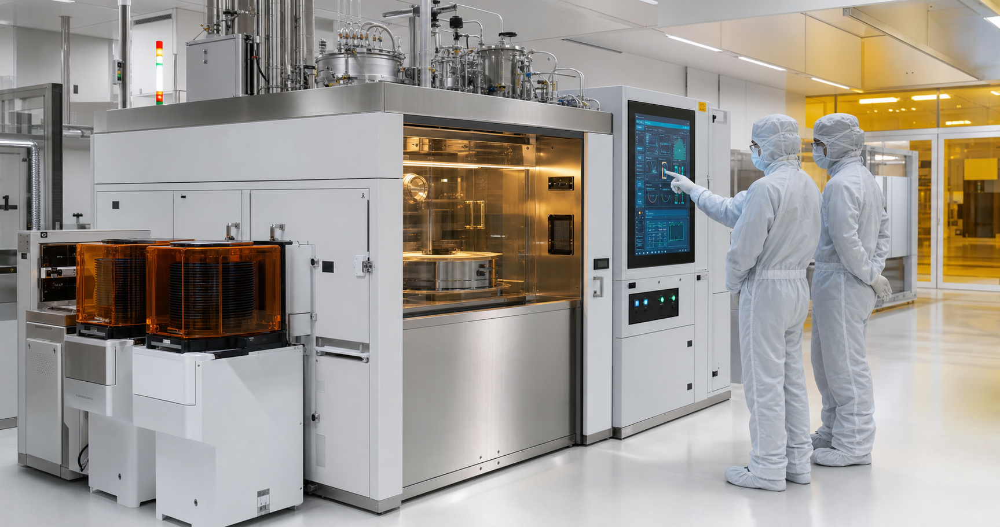

오늘의 행동과 데이터 건강도를 한 화면에 묶는 지휘실
이 화면은 책장, 영어, CE 케이스, 인지훈련, 시기능, Think Tank, 배포 상태를 읽어 오늘의 우선순위와 AI용 요약 packet을 생성합니다. 민감 원문, 고객자료, recipe, setpoint, bypass 정보는 포함하지 않습니다.
Life Shelf Entry
인지능력향상 프로젝트는 비밀번호 없이 바로 시작합니다. 책장, 싱크탱크, 저장소는 개인 데이터가 있으므로 책장으로 들어갈 때만 비밀번호를 확인합니다.
Project Universe OS v6
이 화면은 책장, 영어, CE 케이스, 인지훈련, 시기능, Think Tank, 배포 상태를 읽어 오늘의 우선순위와 AI용 요약 packet을 생성합니다. 민감 원문, 고객자료, recipe, setpoint, bypass 정보는 포함하지 않습니다.

입사 전 4주 압축 예습
공정 원리, 장비 서브시스템, 설치 플로우, 안전, 고객 커뮤니케이션을 한 화면에서 반복 학습합니다.
Brain-Friendly Loop
학습 논문에서 반복 확인되는 retrieval practice, spacing, interleaving, worked examples 원리를 장비 학습 동선으로 바꿨습니다. 한 번에 다 외우지 말고 아래 4단계를 눌러 짧게 반복하세요.
Role Fit
Daily Drill
CE Growth Curriculum
각 챕터를 위에서 아래로 따라가면 개념, 실제 장비 위치, wafer 변화, CE evidence, 중지 조건, 고객 보고 문장이 하나의 사고 흐름으로 연결됩니다. 공개자료로 확인 가능한 원리만 넣고, recipe, valve sequence, detector setpoint, interlock bypass, 고객 site-specific acceptance limit은 현장 승인 문서 우선으로 분리합니다.
Learning Roadmap
Tool & Process Map
Wafer Process Visualizer
이 페이지는 Applied 공식 제품 페이지, 공개 장비 운영 자료, 공개 CVD/Epitaxy 원리 자료를 바탕으로 만든 학습용 시각화입니다. 실제 고객 라인의 gas matrix, pressure, temperature, flow, purge cycle, valve sequence, detector setpoint, recipe limit, acceptance 기준은 공개자료로 확정할 수 없으며 반드시 회사 교육, 고객 site spec, SDS, install manual, senior witness를 따라야 합니다.
3D Equipment Digital Twin
공개자료 기반 mental model입니다. 실제 recipe, valve sequence, detector setpoint, interlock bypass, site-specific acceptance limit은 의도적으로 제외합니다.
Applied Tool Families
아니라고 보는 게 안전합니다. 채용공고의 FEP/EPI(RTP/Epitaxy)는 단일 모델명이 아니라 Applied의 Front End Products 계열 안에서 Epitaxy와 RTP 장비를 설치·정비하는 업무 영역으로 이해하는 것이 맞습니다. 실제 장비는 고객 node, wafer size, chamber 수, pre-clean/etch 통합, gas panel, pressure range, host/data 옵션에 따라 configuration이 달라집니다.
Cluster Tool Builder
이 게임은 공개 자료 기반의 교육용 cluster tool 개념 시뮬레이터입니다. 실제 고객 장비의 정확한 chamber 위치, slot naming, gas panel, robot type, safety interlock, qualification limit는 Applied 공식 configuration 문서와 고객 site spec을 따라야 합니다. 여기서는 PM을 Preventive Maintenance가 아니라 Process Module, TM을 Transfer Module, LL을 Load Lock으로 사용합니다.
Diagnostic Simulator
Installation Master
시설 연결
아래 내용은 공개 자료 기반의 학습용 개념도입니다. 실제 평택 라인의 POC 위치, 압력/유량/전압/배기량, gas species, 배관 사양, purge recipe, interlock logic, acceptance limit는 고객사와 Applied 공식 문서 및 현장 승인 절차로만 확인해야 합니다.
Electrical / DVM Troubleshooting
이 화면은 CE가 전기 회로를 안전하게 이해하고 선임에게 좋은 질문을 던지기 위한 학습용입니다. 실제 energized work, panel 개방, interlock 확인, LOTO, arc-flash PPE, live measurement는 반드시 회사 교육, 고객 site rule, 자격 권한, 작업허가, 공식 매뉴얼을 따릅니다. 모르면 멈추고 선임/EHS/전기 owner에게 escalation합니다.
Samsung / Pyeongtaek Readiness
FEP/EPI Gas Safety
아래 내용은 공개 자료에서 확인되는 반도체 EPI/CVD/RTP 주변 가스와 위험성 학습용입니다. 실제 평택 라인의 사용 gas, 농도, 압력, purge 조건, leak test 기준, gas cabinet 구성, detector setpoint, abatement interlock은 고객 site specification과 Applied 공식 install manual로만 확인해야 합니다.
Mastery Operating System
이 섹션은 “자료를 많이 아는 사람”이 아니라 “현장에서 안전하게 질문하고, 원인을 좁히고, 설치/정비 산출물을 남길 수 있는 CE”를 만드는 구조입니다. 실제 가스 조작, interlock, 전기 작업, 고객 라인 절차는 반드시 Applied 공식 교육과 고객 site rule을 따라야 합니다.
Fab Readiness Gate
이 앱을 다 봐도 혼자 gas, electrical, interlock, chamber open, recipe qualification을 수행할 권한이 생기는 것은 아닙니다. 현장 투입 가능성은 공식 교육, 고객 site orientation, 선임 입회, 작업 허가, 장비별 매뉴얼, 실제 hands-on 평가로 결정됩니다. 이 섹션은 그 전에 빈틈을 드러내고 빠르게 메우기 위한 준비도 판정판입니다.
Senior CE Field Runbook
이 섹션은 실제 권한이나 공식 절차를 대체하지 않습니다. 대신 site rule, Applied 공식 교육, 선임 입회, 고객 승인 전에 어떤 질문과 증거를 준비해야 하는지 빠르게 정렬하는 개인 훈련판입니다.
Fellow Ascent Operating System
Fellow급 성장은 직함을 기다리는 것이 아니라, 큰 문제를 정의하고, 반복 가능한 해결 구조를 만들고, 안전과 고객 신뢰를 지키며, 다른 엔지니어가 따라 배울 수 있는 증거를 축적하는 과정입니다. 이 페이지는 공개 가능한 학습/경험/성과만 기록하고, 고객 비공개자료·recipe·site-specific limit·manual 원문은 기록하지 않습니다.
Materials MS Academy
수학 기초가 약한 현장 반도체 엔지니어가 오프라인 학원 없이도 재료공학 석사 수준의 수학, 물리, 화학, 재료, 반도체, EPI, 논문 읽기 역량을 단계적으로 쌓도록 설계한 개인 학습 OS입니다. 이 화면은 시험 합격보다 개념 이해, 공정 적용, 장기 숙달을 우선합니다.
Cognitive Resilience Project
이 화면은 치매를 진단하거나 치료하지 않습니다. Lancet Commission, WHO, FINGER/US POINTER 계열 다영역 생활중재 연구처럼 공개 근거에서 반복되는 축인 운동, 혈관위험 관리, 인지훈련, 사회적 연결, 수면/청각/생활 루틴을 매일 짧게 실행하도록 만든 개인 훈련 공간입니다. 기억력 저하가 일상 기능에 영향을 주거나 갑자기 악화되면 의료진 상담이 우선입니다.
Vision Function Recovery Book
이 책은 간헐적외사시, 복시, 융합 조절을 스스로 진단하거나 치료 처방하는 화면이 아닙니다. 안과/사시 전문의, 검안사, orthoptist의 평가와 지시를 우선하고, 새로 생긴 지속 복시·시력저하·심한 두통·눈 통증·어지럼·눈꺼풀 처짐·말/힘 빠짐이 있으면 훈련하지 말고 진료를 우선합니다.
PRIVATE OPERATIONS SHELF
FEP/EPI 트레이너는 이 책장의 첫 번째 전문서입니다. 건강, 자산, 사업, 가족, 학습, 의사결정, 아이디어도 같은 방식으로 쌓되 원문 민감자료가 아니라 요약, 판단 근거, 다음 행동, AI에게 보여줘도 되는 범위를 중심으로 저장합니다.
EPI Think Tank Vault
트러블슈팅, 설치, qualification, 공정 문제, 고객 커뮤니케이션 경험을 같은 구조로 기록해 장기적으로 EPI Process Engineer 수준의 사고 데이터베이스를 만듭니다. 로컬 vault 서버가 켜져 있으면 기록과 학습 상태가 D 드라이브에 자동 백업됩니다.
Senior-Level Deep Dive
Glossary
Fab 101
Public Papers & Web Notes
English Term Helper
본문에 나오는 영어 용어 옆에는 짧은 한국어 풀이가 자동으로 붙습니다. 이 메뉴에서는 같은 용어를 카테고리별로 다시 볼 수 있습니다. 영어를 외우는 목적이 아니라, 선임·고객·장비 화면에서 들리는 말을 바로 장비 동작과 연결하는 것이 목표입니다.
AMK English CBT Simulator
공식 FAQ 기준으로 영어테스트는 온라인 CBT 약 1시간이며 문법, 말하기, 독해, 듣기 평가가 포함됩니다. 실제 기출은 비공개이므로 이 화면은 기출 복원이 아니라 공개 형식과 합격 후기의 난이도 감각을 반영한 유사 훈련입니다. 이번 버전부터 정답 위치 균형, 유형 인터리빙, 지문/듣기 질문 변형을 적용해 패턴 암기를 줄였습니다.
Quiz & Flashcards